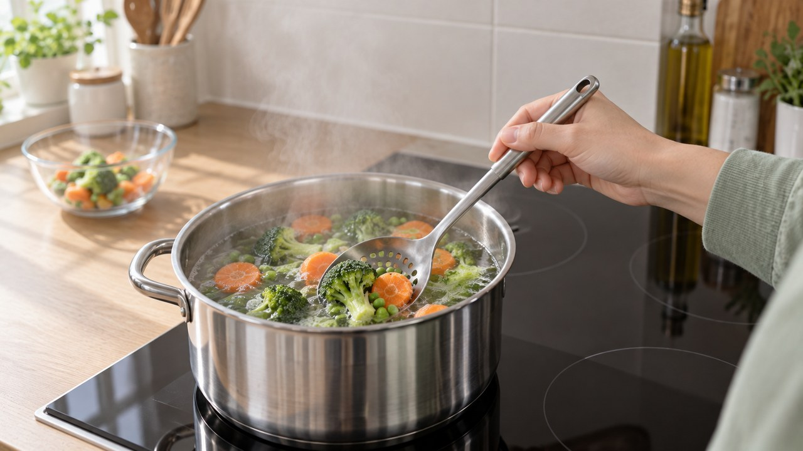
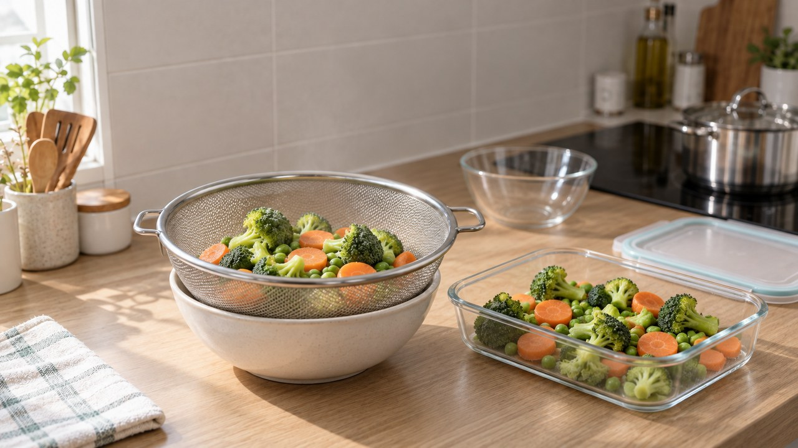
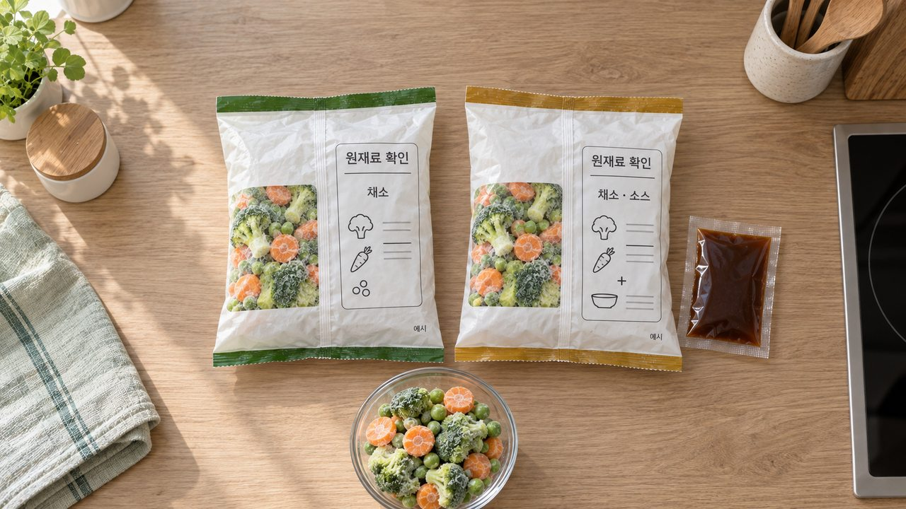
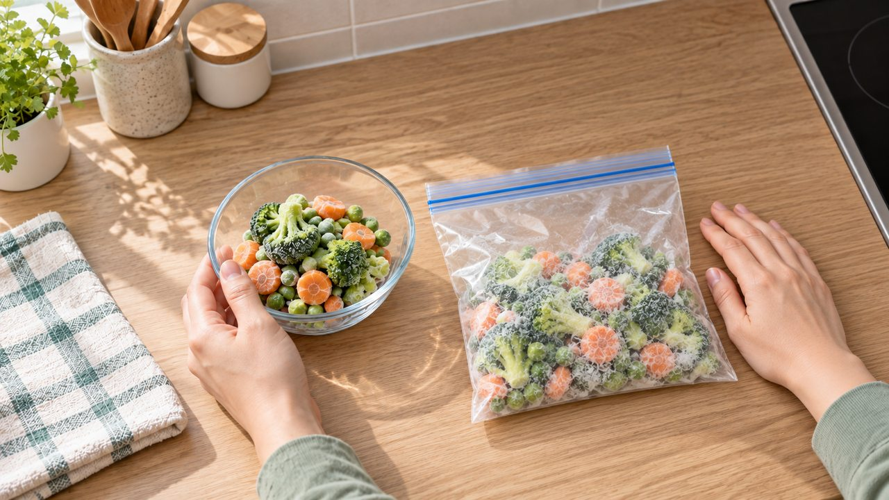
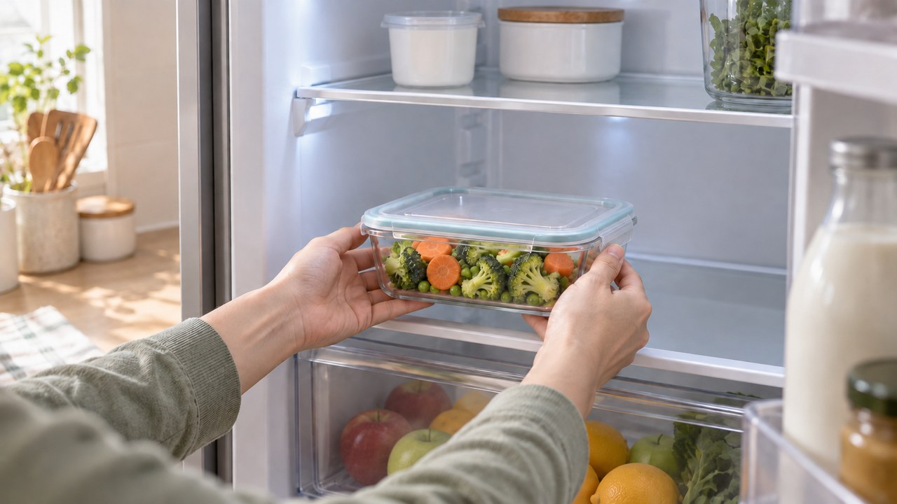

“데친 건데 그냥 먹어도 되지?” 녹인 냉동채소 샐러드에 바로 부으면 위험한 이유
퇴근하고 돌아와 밥 차릴 기운조차 없을 때
냉동실 속 손질된 채소만큼 반가운 게 없지요.
봉지를 열면 초록빛이 워낙 선명하다 보니
찬물에 살짝 녹여 샐러드에 바로 넣으셨던 적 있으시죠?
하지만 익은 것처럼 보여도 포장지의 가열 표시를 확인하지 않으면
남아 있던 세균 때문에 배탈로 고생할 수 있습니다!

| 색이 파릇해도 가열 표시부터 확인하세요

얼린 브로콜리나 완두콩이 파랗게 보이는 건
급속 냉동 전에 살짝 열을 쐬어 효소만 멈춰 두었기 때문입니다.
이 과정만으로는 저온에서 버티는 세균까지
모두 사라지는 것이 아니어서 주의가 필요합니다.

그래서 봉지 뒷면 정보표시면을 살펴보면
가열하여 섭취하는 냉동식품인지 아니면 비가열 섭취 대상 냉동식품인지
뚜렷하게 구분해 적어 두었습니다.
만약 가열하여 섭취하는 냉동식품이라고 적혀 있다면
실온에서 녹이기만 해서 바로 드시면 안 됩니다.

| 샐러드에 넣을 땐 익혀서 식히는 순서
시원한 샐러드나 아침 스무디에 넣을 때도
포장에 가열 안내가 있다면 먼저 익히는 과정이 필수입니다.
미리 녹이지 말고 언 상태 그대로 포장지 조리 안내에 맞춰
중심부 70℃에서 2분 이상 김이 모락모락 오르도록 익혀 주세요.

다 익힌 뒤에는 넓은 채반에 바로 펼쳐
고인 물기와 수증기를 빠르게 날려 식혀 주는 것이 비결입니다.
이렇게 열기를 식힌 뒤 샐러드 볼에 올리면
잎채소도 숨이 죽지 않아 아삭한 식감이 살아납니다.

| 양념 제품 성분표와 냉장 보관 주의점

냉동채소도 성인 1회 분량 80g 기준으로
하루 채소 섭취량을 채우는 훌륭한 식재료가 됩니다.
다만 버터 소스나 시즈닝이 들어간 제품은 소금과 지방, 당류가 높으니
첨가물 없는 순수 원물 무가미 제품인지 뒷면 성분표를 꼭 비교해 보세요.


한 번 녹인 채소는 다시 얼리지 말고 먹을 만큼만 덜어 쓰며,
익혀 둔 채소는 2시간 안에 냉장고에 넣어 48시간 이내에 드셔야 안전합니다.

혹시라도 덜 익은 식품을 드신 뒤 열이 나거나 복통과 구토가 이어진다면
혼자 참지 마시고 즉시 가까운 진료기관을 찾아 상태를 점검받으세요.

오늘 저녁 냉동실에서 채소 봉지를 꺼내실 때는
붓기 전에 뒷면의 가열 표시 한 줄부터 먼저 살펴보시면 어떨까요?
여러분은 평소 냉동 브로콜리나 채소믹스를 볶음 요리에 주로 넣으시나요,
아니면 익혀서 식힌 뒤 샐러드에 곁들이시나요? 댓글로 편하게 나눠 주세요 😊
#냉동채소 #냉동브로콜리 #냉동채소조리법 #냉동채소샐러드 #냉동야채믹스 #냉동브로콜리해동 #냉동옥수수 #가열하여섭취하는냉동식품 #냉동채소영양 #샐러드만들기 #직장인식단 #자취생식단 #에디터혀니 #꿀단지